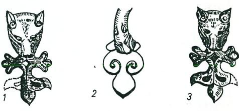
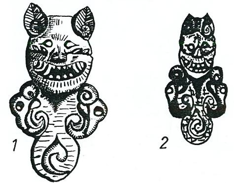

"Kutsal Mağara" inancının menşeleri: Büyük Hun Devletinde Kutsal bir Ata-Mağarası'nın bulunduğunu, Çin kaynaklarından öğreniyoruz. Bu kutsal mağaraya yalnız Şamanlar veya kişiler değil; bütün devlet teşkilâtı saygı gösteriyor ve senenin belirli aylarında bu mağara ziyaret edilerek büyük bir tören yapılıyordu, önemli olan nokta, hükümdarın da bu törene başkanlık etmesi idi. Maalesef bu mağaranın nerede ve hangi mağara olduğunu bilmiyoruz. Toba'lar da, kayaları ata mabedi şeklinde oyuyorlar ve mağaraya benzeyen bu yerlerde, göğe, yere ve Han soylarının ruhlarına kurbanlar sunuyorlardı. Bu kurban merasiminden sonra da, kayın ağaçları dikerek, o bölgede bir nevi kutsal bir orman meydana getiriyorlardı, öyle anlaşılıyor ki, Toba'larda da bir nevi mağara kültü vardı.9
Göktürk'lerde de bir Ata-Mağarası'nın bulunduğunu kesin olarak biliyoruz. Göktürk Kağanı da senenin belirli zamanlarında devletin ileri gelenlerini ve kabilelerin soylularım yanına alarak bu ecdat mağarasına gidiyor ve oraya kurbanlar vererek saygı duruşunda bulunuyordu.10 Yine Göktürklerin menşe efsanesinde de, dişi kurt çocuğu alıp bir mağaradan içeriye götürmüş ve orada türemişlerdi.
Kırgız'lar kendilerini kurttan türeyen Türklerden ayırmak istemiş olacaklar ki, başka bir menşe efsanesine bağlanmışlardır. Onlara göre, kendilerinin ilk ataları bir Ata-Mağarası'nda bir inekle yaşıyordu. Kırgızlar, işte bu ilk ata ile inek ‘den türemişlerdi11. Görülüyor ki, burada da bir Ata-Mağarası motifi vardır. Korelilerde senenin 10. ayında Ata-Mağarası'na gidiyorlar ve orada göğe kurban veriyorlardı12.
Ay bek üd-Devâdârî'nin Türklerin menşei hakkında anlattığı efsaneye dıştan birçok tesirlerin girmiş olmasına rağmen, Türklerin ilk atası olan Ay-Ata da yine bir mağarada meydana gelmişti. Mağara ilk insana, yazarın da dediği gibi, bir "ana rahmi" vazifesini görmüştü. Proto-Moğol dinlerinde, bu ata mağaraları motifini görmek, oldukça güçtür. Biraz sonra vereceğimiz örneklerle de anlaşılacağı üzere, mağaraların kutsal sayılmasının sebebi şu olmalıydı:
"Mağaralar, yeraltı dünyasını, yeryüzüne bağlayan birer kapı gibi idiler."
Bu efsanenin diğer değişik bir şekli de, Çin'deki Sui Sülâlesinin tarihinde bulunur. Sui Sülâlesi, M.S. 570’den sonra kurulmaya başlamış ve bütün Kuzey Çin'i egemenliği altında toplayabilmişti. Türklerle başarılı harpler yapabilmiş ve onları içlerinden yıkabilmek için, iyi sonuçlar veren bir siyaset de güdebilmişti. Bu Sülâle zamanında pek çok Çinli, Türkler arasına kaçarak orada yaşamış ve pek çok Türk de Çin sınırlarına gelerek yerleşmişlerdi. Bunları söylemekten maksadımız şudur: Artık bu sülâle zamanında Çin, Türkleri iyiden iyiye öğrenebilmiş ve bu sebeple de, bu sülâlenin tarihinde geçen efsaneler ayrı bir değere sahip olmuşlardı. Efsane şöyledir:
"Bazıları şöyle derler: Bir rivayete göre (Göktürklerin) ilk ataları, Hsi-Hai, yani Batı-Denizi'nin kıyılarında oturuyorlardı. Lin adlı bir memleket tarafından, onların kadınları, erkekleri, (çocukları ile birlikte), büyüklü, küçüklü, hepsi birden yok edilmişlerdi. (Türklerin hepsini öldürdükleri halde), yalnızca bir çocuğa acımışlar ve onu öldürmekten vazgeçmişlerdi. Bununla beraber, onun da kol ve bacaklarını keserek, kendisini "Büyük- Bataklık"ın içindeki otlar arasına atmışlardı. Bu sırada dişi bir kurt peyda olmuş ve ona her gün, et ve yiyecek getirmişti. Çocuk da bunları yemek suretiyle kendine gelmiş ve ölmemişti. (Az zaman sonra), çocukla kurt, karı-koca hayatı yaşamaya başlamışlar ve kurt da çocuktan gebe kalmıştı.
"(Türklerin eski düşmanı Lin devleti, çocuğun hâlâ yaşadığını duyunca), hemen adamlarını göndererek, hem çocuğu ve hem de kurdu öldürmelerini emretmişti. Askerler kurdu öldürmek için geldikleri zaman, kurt onların gelişlerinden daha önce haberdar olmuş ve kaçmıştı. Çünkü kurdun kutsal ruhlarla ilgisi vardı ve (daha önce onlar vasıtası ile haber almıştı).
"Buradan kaçan kurt, (Batı) –Denizinin doğusundaki bir dağa gitmişti. Bu dağ, Kao-ch’ang (Turfan)’ın kuzey-batısında bulunuyordu. Bu dağın altında da, çok derin bir mağara vardı. (Kurt, buraya gelince ), hemen bu mağaranın içine girmişti. Bu mağaranın ortasında, büyük bir ova vardı. Bu ova, baştanbaşa ot ve çayırlıklarla kaplı idi. Ovanın çevresi de, aşağı yukarı 200 milden fazla idi.
"Kurt, burada on tane erkek çocuk doğurdu. (Göktürk Devletini kuran) A-şi-na ailesi, bu çocuklardan birinin soyundan geliyordu. "
Her iki efsane de, konu itibarı ile birbirlerinin aynıdır. Yalnız ikinci kaynakta bazı yer adları fazla olarak ilâve edilmiştir. Bunlar da bir efsanenin daha orijinal olduğunu gösteren en önemli delillerdir. Yukarıda da söylediğimiz gibi ikinci kaynak, Türkleri daha iyi tanıyordu. Aynı efsanenin her iki kaynakta da bulunuşu, böyle bir efsanenin var olduğunu ve Türkler arasında söylendiğini gösteren en kuvvetli bir delildir. Çünkü bu kaynaklar, birbirini takip eden iki ayrı sülâlenin tarihleridir. Ayrıca daha sonraki kaynak da, kendisinden önce verilen bilgilerin düzeltilmesi ve ona yeni ilâveler yapılması da ayrı bir önem taşır. Demek ki bu efsaneler, Göktürkler arasına söyleniyor ve bunlara samimî olarak inanılıyordu. Zaten kaynaklar ilâve de ediyorlar ve şöyle diyorlar : "Onların kurttan türemiş olmaları sebebi ile bayraklarının tepesinde de bir kurt başı vardı".
İkinci efsanede, Türklerin ilk önce "Batı-Denizi" yakınlarında oturdukları söyleniyor. Şimdiye kadar bu efsane üzerinde fikir yürüten bilginlerin hepsi de, bu denizin Çin'in batısındaki Kuku-Nor gölü olduğunu söylemişlerdir. Bazı Türkler de bu fikri benimsemişlerdir. Kuku-Nor, Tibet kavimlerinin ana vatanı idi. Bu bölgeye belki de, ne bir Hun ve nede Türk ayağı basmıştı. Maalesef efsane, şimdiye kadar iyice okunup değerlendirilmemiştir. Efsane de gayet açık olarak okunuyor: Düşman askerleri gelince kurt, "Denizin doğusu"ndaki bir dağa kaçmıştır. Bu dağ da, Turfan'ın kuzey batısında bulunuyordu. Bundan da anlaşılıyor ki bu denizin Aral veya Balkaş Gölü olması lâzımdı. Çünkü Turfan'ın batısındaki bölgeler buralar idiler.

Şekil 5: Altay Hunlarının efsaneleşmiş kurt figürleri
Bu tipteki masallar, Türk Mitolojisinin en önemli örnekleridir. Anadolu'da okunan Muhammediye'lerde Muhammed Hanefi, önüne çıkan bir geyiği kovalar, geyik bir mağaradan içeri girer ve genç de onu takip eder. Mağaradan geçtikten sonra büyük bir düzlüğe çıkılır ve cennet gibi bahçelerde Mine-Hatun'a rastlar. Bu gibi halk eserlerinde, peygamberlerin tarihleri, Türk mitolojisine büründürülerek halka sunulmuştur.
Güney Sibirya masallarında, bir bahadır avlanırken karşısına bir geyik çıkar ve er de geyiğin peşine düşüp onu kovalamağa başlar. Geyik kaçar, o kovalar. En sonunda bir Bakır-dağ'ın önüne gelirler. Baştanbaşa bakırdan yapılmış olan dağ birden bire açılır ve geyik de bu delikten içeri girer13. Diğer masallarda, avcı da bakır dağdan içeri girer. Az sonra geyik kaybolur ve karşısına Yedi-Tanrı (Kuday) çıkar14. Geyik burada tamamen bir serap ve Tanrının bir elçisidir. Böyle bir masalı, bu kitapta örnek olarak tümü ile vereceğiz. Diğer masallar da ise, avcının karşısına bir Kara-Tilki çıkar ve onu kovalamaya başlar. Bu kovalama sırasında tecrübeli bir ihtiyar, avcıya öğüt vererek şöyle der : "Filanca kayada bir kapı vardır. Bu tilki o kayaya varmadan onu avlamalısın ve kapıdan da içeriye girmemelisin".15 Çünkü bu kara tilki, yer altındaki kötü ruhların bir elçisi ve gölgesidir. Onların maksatları, avcıyı içeri çekip, yok etmektir.
Yine Güney Sibirya masallarında, bu tip hikâyelerin çok daha mitolojik şekillerine de rastlıyoruz. Meselâ yine avlanan böyle bir çocuk mağaradan içeri girince, arslanlar, ayılar ile beraber yaşayan 13 kıza rastlar. Kızlar oğlanı görünce hemen kurt şekline girerler ve başlarlar oğlanla, savaşmaya16. Başka bir masalda da, bir çocuk yeryüzünde savaşırken, bir mağara deliğinden yer altına düşer. Yeraltındaki kötü ruhlar çocuğa 9 zincir vurur ve hapsederler. En sonunda çocuk zincirlerden kurtulup, dışarı çıkmak ister. Bu sefer de Kuğu-Hanım onun çıkmasına mâni olur. Uzun savaşlardan sonra, çocuk canım kurtarır ve yeniden hayata haşlar17.
Anadolu masallarında da Ala-Geyik, Kaf Dağında oturan Tepe-göz'ün kızı idi18. Avcıları peşinden çekerek onları Kaf dağına götürüyor ve onlara kötülük ediyordu. "Geyik de çekti, beni kendi dağına," şarkı ve masalının kökleri, işte, Türk Mitolojisinin bu motiflerinin içinde yatar.
Yine Sibirya'daki Türk masallarına göre, yeraltına giden "Kaya-kapısı," Altın-Dağ'da bulunuyordu. Bu kapının önünde de Cedey-Han'ın 7 köpeği bekçilik ediyordu19. Bazı masallara göre ise, yer altına giden bu mağara kapısı, büyük bir denizin ötesinde bulunuyordu.20"
Bazı masallarda da, böyle açılan kayalar insanlara iyilik ederler. Meselâ babası ve annesi olmayan bir kız, erkek kardeşi ile giderken, kardeşi attan düşüp, boynu kırılıyor ve ölüyor. Kız bir kayanın ününe geliyor ve şöyle diyor : "Açılan kaya, açılıver, koyayım kardeşimi içine. Yalın kaya, yarılıver. Biricik tek kardeşimi koyayım içine!" Kız bu sözleri söyleyince, hemen kaya yarılıveriyor ve kız, kendi kardeşini oraya koyup emniyete aldıktan sonra Gün-Han'a gidiyor. Gün-Han'dan kardeşinin tekrar can bulması için ricada bulunuyor21.
Türk Kozmogonisi ile ilgili bölümümüzde bu konuyu yeniden ele alacağız. Altay Şamanizm’inde, yeraltına giden bu kapıya, "Dünyanın bacası" adı verilirdi. Şamanlar yeraltı dünyasına giderlerken, bu delikten içeri girerlerdi22. Yakut Türk’lerinin, yeryüzünü temsil eden demir plakalarının da ortası delikti. Bundan da anlıyoruz ki Yakutlar da, böyle yeraltına giden bir kapının varlığına inanıyorlardı. Yine Yakut'lara göre dünyanın sonu, Lena nehrinin Kuzey Buz denizine döküldüğü yer idi. Lena Nehri suları çok bol olan bir nehirdir. Denize döküldüğü yerde de, büyük girdaplar meydana getirirdi. Bunun için de Yakutlar bu girdapların, yer altına giden bir kapı olduğunu zannederlerdi23.
Bu efsane, diğerlerine nazaran daha değişiktir. "Kurttan türeme" ve "Mağaradan çıkma'" efsanesi, Göktürklerin resmen kabul ettikleri bir "Devlet mitolojisi" gibi görünüyordu. Bu ikinci efsaneye ise, din inanışları ile halk hikâyeleri biraz daha fazla tesir etmiş gibidir.
Efsanenin başlangıcında "dişi kurt" pek görünmemektedir. Fakat efsane bittiği zaman kaynak, rivayetin değişik olmasına rağmen, bunların hepsinin de kurttan geldiğini söylemiştir. Bu duruma göre aşağıda tam olarak tercümesini vereceğimiz efsanenin motiflerini şöyle sıralayabiliriz:
1. 18 kardeş varmış ve bunlar Hunların kuzey bölgelerinde oturuyorlarmış. En büyük kardeşleri ise kurttan doğmuş imiş.
2. Bu kardeşler ve onlara bağlı olan halk, bir düşman istilâsına uğruyor. Hiç kimse kalmamak üzere kılıçtan geçiriliyor. Efsanenin bu bölümü, Kurt efsanesine benzer. Fakat Kurt efsanesinde, kolları ve bacakları kesilen yalnızca bir erkek çocuk kalmıştır. Ve bu çocukla dişi kurttan da, yeni bir soy türemiştir. Burada ise geriye kalan, yalnızca kurttan doğan büyük kardeştir.
3. Bu bölümde, yalnızca kurttan doğan büyük kardeşten söz açılıyor. Efsaneye göre, bu ata da, " Yaz" ve "Kış Tanrıları" ile evli imiş.
4. Yaz ve Kış Tanrıları ile evlenen bu atadan dört çocuk oluyor. Bunlardan birisi leylek olup uçuyor. Bu da Türk mitolojisinin çok önemli bir motifidir. İkinci çocuğun adı, Kırgız; dördüncü çocuğun adı da Türk oluyor. Üçüncü çocuğun adı ise okunmuyor.
5. Türk, çocukların en büyüğüdür, öyle anlaşılıyor ki, babasının yerine o geçiyor. Bu soy kütüğü, Ebülgazi Bahadır Han'ın "Yafes oğlu Türk" şeceresine benziyor. Burada ateşi icat eden de Türk idi. Ebülgazi'ye göre ise Yafes oğlu Türk, çadırı icat etmişti.
6. Türk'ün "On karısı''' vardı. Her karısından ise bir boy meydana gelmişti. Hâlbuki Kurt efsanesinde, "On oğul"dan, on boy türemiştir. Oğuz Destanına göre de bir mukayese yapacak olursak, Kurt efsanesinin daha orijinal olduğunu görürüz. Çünkü Türk mitolojisinde soylar, kadınlardan değil, oğullardan meydana gelirdi.
7. Bu on kadından meydana gelen "On-Boy" için bir başkan bulmak lâzımdır. Bunun için de, yükseğe sıçrama müsabakası yapılır. Bu motifin bir paralelini de, Altay Türklerinin masalları arasında bulduk, örnekler bölümünde bunun da bir özetini okuyacaksınız.
8. Göktürk devletini kuran ailenin ilk atası A-şi-na'nın, en yükseğe sıçrayarak başkan olması.
Şimdi bu efsanenin orijinal metnini, Çin kaynaklarından aynen tercüme ederek sunuyoruz. Ümit ediyoruz ki, yukarıda tahlil yollu verdiğimiz açıklama, fazlaca Çince sözler bulunan bu metnin anlaşılmasına daha fazla ışık tutacaktır:
"Göktürklerin ataları, Hunların kuzeyinde bulunan Sou ülkesinden çıkmışlardır. Onların kabilelerinin reisine A Pang-pu denirdi. Onun, on yedi tane büyük ve küçük kardeşi vardı. Büyük kardeşlerinden birinin adı da İ-ci Ni-su-tu idi. Bu çocuk kurttan doğmuştur. Bütün bu kardeşlerin yaratılış bakımından tabiatları, biraz budalaca idi. Bu sebeple de devletleri, düşmanlar tarafından süratle yok edildi…
"Tabiatüstü bir kudrete ve özelliklere sahip olan İ-ci Ni-su-tu, yağmurun yağması ve rüzgârın esmesi hususunda emirler verebiliyordu. Onun iki karısı vardı. Bunlara, yaz ve kış Tanrılarının kızları denirdi. Bu iki kadından birisi, dört tane çocuk doğurdu. Bu çocuklardan birisi beyaz bir leylek oldu. İkinci çocuk, A-fu ile Kem nehirleri arasında oturdu. Bunun adı da Çi-gu (Kırgız) idi. Üçüncü çocuk da, Çu-cin suyunda yerleşti.
"Dördüncü çocuk ise, Chien-su ve Şin dağlarında oturuyordu ve kardeşlerinin de, en büyüğü idi. Bu dağlar üzerinde, yıkılan eski devletin başkanı A Pang-pu'nun bir oymağı yaşıyordu. (Bu dağların çok soğuk olması sebebi ile), bu oymak da soğuktan çok ıstırap çekiyor (ve ısınmanın bir yolunu bulamıyordu). Dört çocuğun en büyüğü, burada ateşi bulmuş ve onları ısıtarak beslemişti. Bu yolla da oymak halkı ölmeden, yaşamanın yolunu bulmuştu. Bunun üzerine diğer üç kardeş de birleşerek, büyük kardeşlerini başkan seçmişlerdi. Büyük kardeş başkan olunca da, Türk unvanı verilmişti.

Şekil 6: Altay Hun Çağı Tuyahta kurganlarında bulunmuş kurt figürleri. Kurt burada demon şekline girmiştir. Postuna üslûp verilerek gece-gündüz sembolü haline sokulmuş ve pençeleri de kartal başı olmuştur. (Rudenko, 1961, T. XVV, XCIV).
"Bu Türk'ün özel adı da Na Tu-liu idi. 10 tane de karısı vardı. Bu kadınların doğurdukları erkek çocukların hepsi de soyadlarını, annelerinin adlarından alıyorlardı.
"(Göktürk Devletini kuran) Aşina ailesi ise, (Türk'ün) küçük karısının soyundan geliyordu. Türk ölünce, 10 ayrı anneden doğan çocukların hepsi toplandılar ve aralarından birisini başkan yapmak istediler. Hepsi bir arada büyük bir ağacın altına gittiler ve orada şöyle anlaştılar : " - Ağaca doğru, en çok kim yükseğe atlayabilirse, o başkan olacaktır". Aşina'nın oğlu, diğerlerinin arasında en genç olmasına rağmen, en yükseğe atladı. (Yüksek atlama rekorunu kırınca da), hepsi onu kendilerine başkan yaptılar.
"Aşina'nın oğlu başkan olunca, A Hsien Şad unvanını aldı. Efsanelerin ayrı olmasına rağmen, bunların hepsinin de kurttan türemiş oldukları üzerinde herkes birleşmiştir.
"A Hsien Şad 'dan sonra da Bumin Kağan (Tu-men) gelmiştir".
Bu çok önemli efsane, yalnızca Cou (Chou) Sülâlesinin resmi tarihinde geçer. Ondan sonraki, bütün Kuzey Çin'i ele geçiren ve Türkleri daha iyi tanıyan Sui Sülâlesinin tarihinde yoktur, öyle anlaşılıyor ki Göktürklerin "Devlet efsanesi", yani devletin resmen tanıdığı efsane, çocuğun dişi kurtla birleşmesi ve bundan mağara içinde, On-boyun türemesi idi. Bu, daha fazla yaygın ve her tarafta yaşayan şekil idi. Daha eski tarihlerin anlattıkları bu efsane ise, halk masalları ile karışmış bir "Halk destanı" idi.
Eski Türk töresine göre, babanın tahtına daima büyük oğul çıkardı. Efsanenin birinci kısmında bu törenin yerine getirilmiş olduğunu görüyoruz. Yine bu efsanenin son kısmında ise, en küçük kadının soyundan gelen çocuk hükümdar olmuştu. Aşina adlı bu kadının çocuğu, diğer On- boy prenslerinin de en küçüğü idi. Eski Türk adetlerine göre "Küçük oğlan", babasının evinde oturan ve baba ocağını devam ettiren bir çocuktu. Bunun içinde, en küçük çocuklara "Ot-Tegin", yani "Ateş prensi", baba ocağını devam ettiren çocuk denirdi. Töreye göre, hükümdar olamazlardı; fakat babalarının mal ve servet mirası onlara düşerdi.
Bu duruma göre bir "Devlet töresi" ve bir de "Halk töresi, " diye iki içtimaî düzen ortaya çıkmaktadır. Halk töresine göre ise küçük oğul önemlidir. Çingiz-Han'ın kurduğu devletin bir Cihan devleti olmasına rağmen, bu eski halk töresini aşıp, devlet töresine ulaşması mümkün olamamıştı. Bu sebeple, Çingiz-Han'ın en küçük oğlu olan Toluy ve ondan gelen çocuklar, devlet içinde birinci derecedeki önemlerini kaybetmemişlerdi.